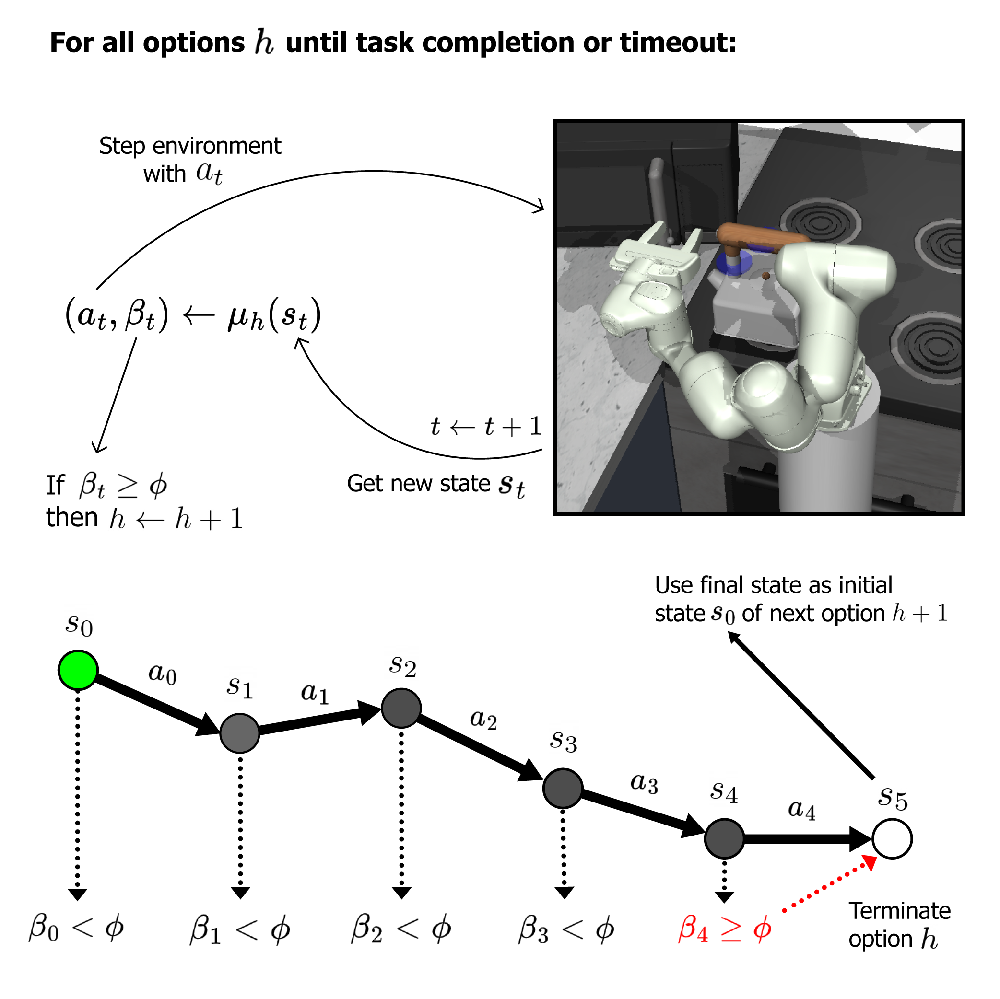

TASC: Fast Skill Chaining for Complex Sequential Robotic Tasks via Pure Imitation Learning
ICINCO, 2026
An imitation learning method which learns each sub-task and its termination probability jointly for long-horizon sequential robotic tasks, from demonstrations with sub-task labels. TASC consistently outperforms several state-of-the-art methods when learning from segmented sub-tasks.